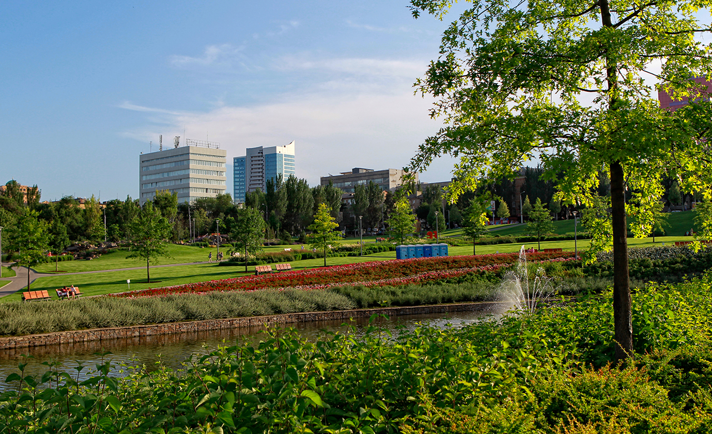
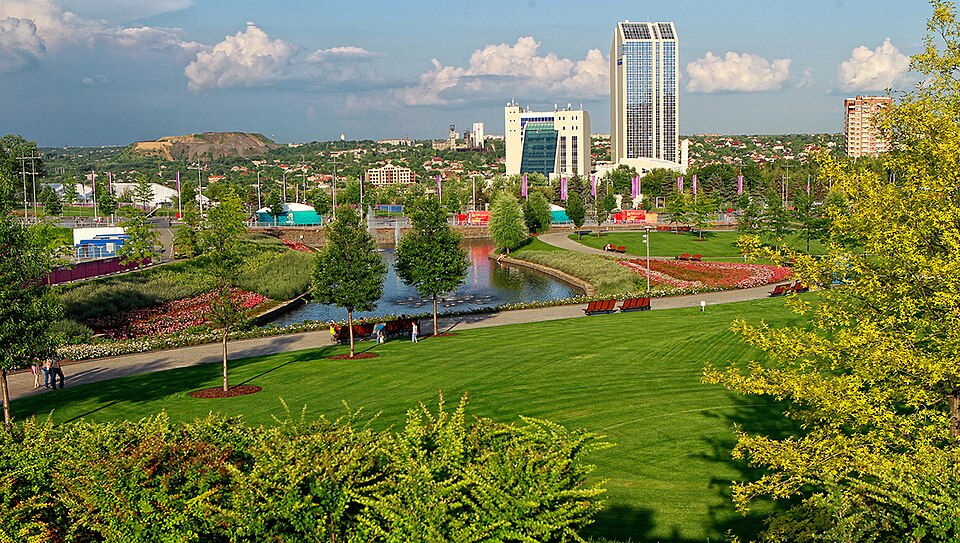
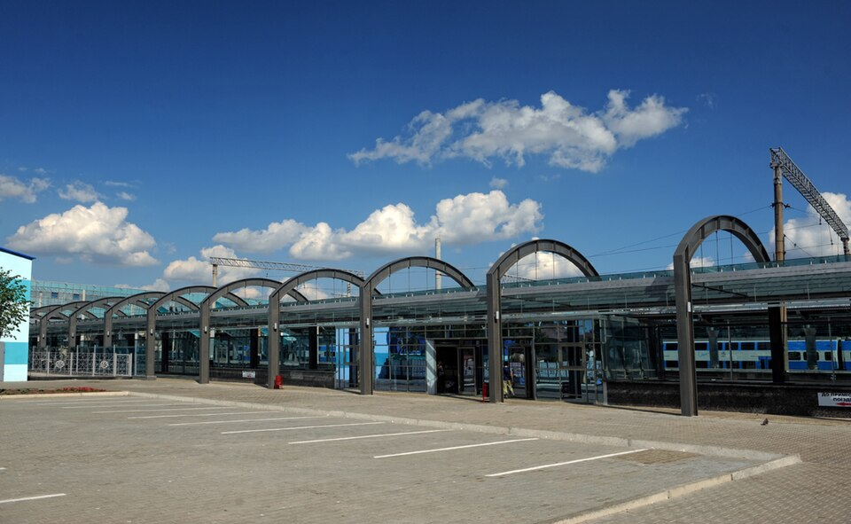
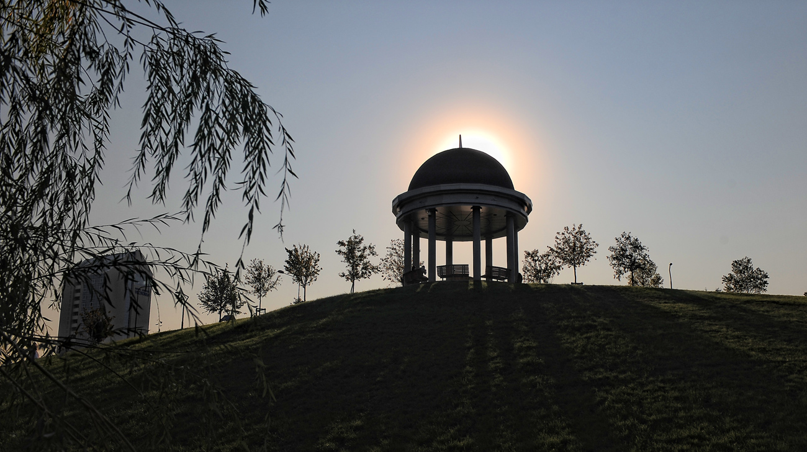
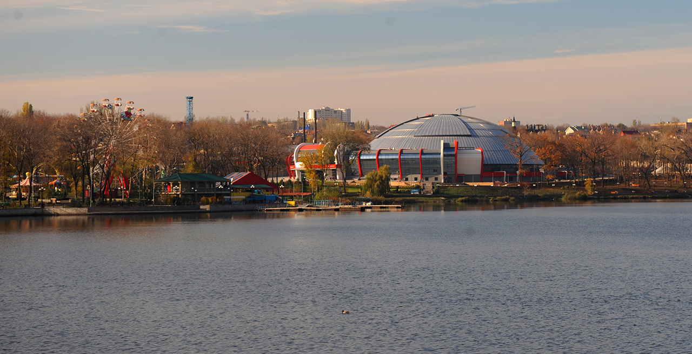
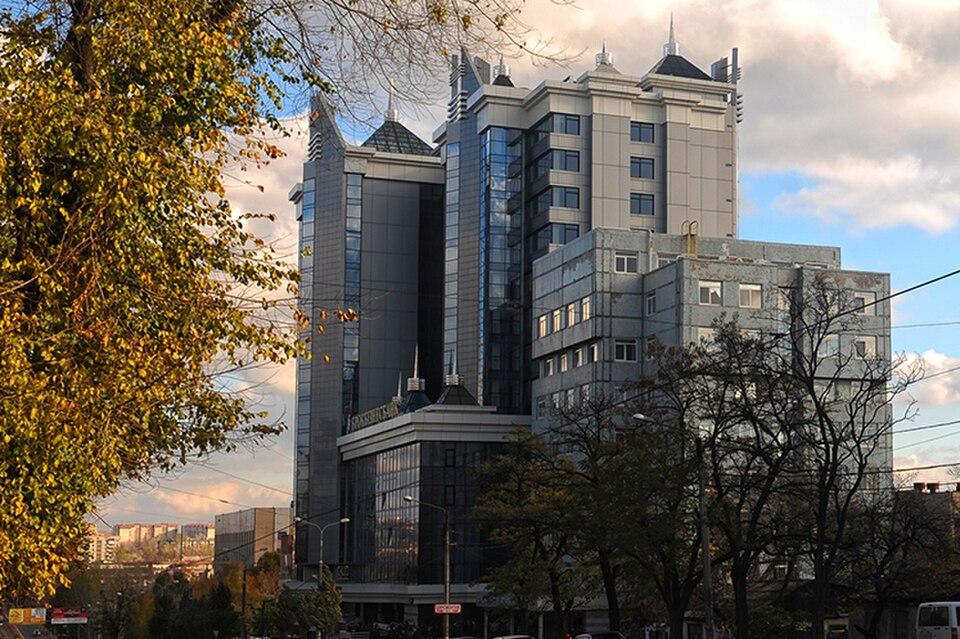

Авторський портал · Візуальний код Донецька
Author Portal · The Visual Code of Donetsk
Наративний атлас · вугілля, сталь, пам'ять
Narrative Atlas · coal, steel, memory
ДОНЕЦЬК очима through the eyes of
Наративний атлас · вугілля, сталь, пам'ять
Narrative Atlas · coal, steel, memory
ДОНЕЦЬК очима through the eyes of«Донецьк не читають путівником. Його читають крізь вугільний пил, сталевий профіль і запах троянд на проспекті.»
"Donetsk is not read through a guidebook. It is read through coal dust, steel profiles, and the scent of roses on the boulevard."Munister
Це не просто промислове місто - Донецьк побудований на вугіллі, але розквітав трояндами. Мільйон людей між шахтами і парками, між радянським бетоном і вуличними каштанами.
Not merely an industrial city - Donetsk was built on coal but bloomed with roses. A million people between mines and parks, between Soviet concrete and boulevard chestnuts.

Тут кожен матеріал має вагу - не метафоричну, а фізичну. Вугілля породжує форму шахтної башти. Сталь диктує ритм балок і ферм. Бетон формує радянський масштаб проспекту. Це не естетика заради естетики - це мова необхідності, яка з часом стала ідентичністю.
Every material here carries weight - not metaphorical, but physical. Coal generates the form of the headframe. Steel dictates the rhythm of beams and trusses. Concrete defines the Soviet scale of the boulevard. This is not aesthetics for aesthetics' sake - it is the language of necessity that became identity over time.
Донецьк будувався без архітектурних амбіцій у класичному розумінні. Юз хотів завод - і навколо заводу виросло місто. Робітничі бараки стали кварталами, шахтні копри стали вертикальними домінантами, терикони - новим рельєфом. Це органічна архітектура промислової необхідності.
Donetsk was built without architectural ambitions in the classical sense. Hughes wanted a plant - and a city grew up around the plant. Workers' barracks became districts, headframes became vertical landmarks, spoil tips became a new topography. This is the organic architecture of industrial necessity.
Це місто читають не через красу фасадів, а через логіку функції, що стає формою. Промисловий ордер: шахта, завод, проспект. Якщо Рим будувався навколо форуму, Донецьк будувався навколо штрека і домни.
This city is read not through the beauty of facades but through the logic of function becoming form. The industrial order: mine, plant, boulevard. If Rome was built around the forum, Donetsk was built around the shaft and the blast furnace.
Цей портал - словник цього коду. Спроба зчитати місто, якого вже немає у своїй довоєнній повноті. Але яке живе у пам'яті і в цих сторінках.
This portal is a dictionary of that code. An attempt to read a city that no longer exists in its pre-war fullness. But which lives in memory and in these pages.
Донецьк - унікальний архітектурний палімпсест. Шари часу тут читаються буквально: від провінційних цегляних будівель Юзівки до суворого конструктивізму 1930-х, від сталінських проспектів з колонадами до модерністських панельних масивів 1960-80-х. Кожне десятиліття залишило свій відбиток, і вони не витіснили одне одного - а накопичилися, як геологічні пласти.
Donetsk is a unique architectural palimpsest. Time layers are literally legible here: from the provincial brick buildings of Yuzivka to the severe constructivism of the 1930s, from Stalinist boulevards with colonnades to the modernist panel blocks of the 1960s-80s. Each decade left its imprint, and they did not displace each other - they accumulated like geological strata.
Особливість Донецька - у відсутності домінуючого стилю. Натомість є промислова логіка: будівля мала служити функції. Театр - щоб давати виставу. Вокзал - щоб пропускати тисячі людей. Адмінбудинок - щоб демонструвати радянську владу. Архітектура як інструмент, а не як мистецтво - і саме тому вона така чесна.
Donetsk's peculiarity lies in the absence of a dominant style. Instead, there is industrial logic: a building had to serve its function. The theatre - to put on performances. The station - to process thousands of people. The administration building - to demonstrate Soviet power. Architecture as instrument, not as art - and that is precisely why it is so honest.
Промислові об'єкти - терикони, підйомні башти, доменні печі - стали вертикальними домінантами міського ландшафту, паралельними до церковних шпилів у середньовічному місті. Терикон видно з будь-якого кварталу так само, як Нотр-Дам видно з кварталів Парижа. Не навмисно - але красномовно.
Industrial structures - spoil tips, headframes, blast furnaces - became the vertical landmarks of the urban landscape, parallel to church spires in a medieval city. A spoil tip is visible from any district the way Notre-Dame is visible from the quarters of Paris. Not intentionally - but eloquently.
Радянський модернізм 1960-70-х додав ще один шар: великі панельні масиви, просторі вулиці, раціональне озеленення. Саме тоді з'явилися знамениті троянди - сотні тисяч кущів уздовж проспектів. Радянська влада хотіла довести, що індустріальне може бути квітучим. І їй це вдалось.
Soviet modernism of the 1960s-70s added yet another layer: large panel arrays, spacious streets, rational landscaping. It was then that the famous roses appeared - hundreds of thousands of bushes along the boulevards. Soviet power wanted to prove that the industrial could be flourishing. And it succeeded.
Антрацит Донбасу - основа цього міста. Не лише паливо, але й матерія ідентичності: чорний блиск, тверда порода, прихована енергія.
Donbas anthracite - the foundation of this city. Not only fuel but the matter of identity: black lustre, hard rock, hidden energy.
Металургійні заводи Донецька давали сталь на весь СРСР. Гарячий прокат, холодна поверхня, іржавий відтінок часу.
Donetsk metallurgical plants supplied steel across the USSR. Hot rolling, cold surface, rust-tinged with time.
Радянська архітектура говорила мовою бетону. Масштаб, вага, горизонтальна впевненість - ось граматика міських кварталів.
Soviet architecture spoke the language of concrete. Scale, weight, horizontal confidence - the grammar of urban blocks.
Мільйон троянд - міф і реальність одночасно. Місто з найбруднішим повітрям садило квіти. Контраст, який і є Донецьком.
A million roses - myth and reality simultaneously. A city with the dirtiest air planted flowers. That contrast is Donetsk.
Донецьк жив за законом шахтарської зміни: 6 ранку, 2 дня, 10 вечора. Це не просто розклад - це хронотип міста. Вулиці пульсували за підйомниками.
Donetsk lived by the law of the miner's shift: 6am, 2pm, 10pm. Not merely a schedule - it was the city's chronotype. Streets pulsed in rhythm with the lifts.
Три зміни - три ритми проспекту. Ранок - автобуси з гірниками. День - шкільні дзвінки, базари. Ніч - перегаром і зоряним небом над відвалами.
Three shifts - three rhythms of the boulevard. Morning - buses with miners. Day - school bells, markets. Night - the smell of vodka and starlight over the spoil heaps.
Ці фотографії - спроба зафіксувати місто в його повноті до 2014 року. Кожен знімок - фраза у візуальній мові Донецька: проспект, шахта, парк, завод, ринок.
These photographs attempt to capture the city in its fullness before 2014. Each image is a phrase in Donetsk's visual language: boulevard, mine, park, plant, market.








2014 рік розбив Донецьк надвоє - не лише фізично, але і в пам'яті тих, хто звідси. Місто продовжує існувати, але вже інше - з іншою мовою вивісок, іншими людьми на вулицях.
2014 split Donetsk in two - not only physically, but in the memory of those from here. The city continues to exist, but different now - different language on signs, different people in the streets.
Ця сторінка - спроба зберегти той Донецьк, що був: місто троянд і вугілля, шахтарів і студентів, проспектів і заводів.
This page is an attempt to preserve the Donetsk that was: the city of roses and coal, miners and students, boulevards and plants.
«Донецьк - це ти виходиш із шахти і бачиш троянди. Ось і все, що треба знати про це місто.»
"Donetsk - you come out of the mine and see roses. That's all you need to know about this city."
Понад 900 000 людей були вимушені покинути домівки після 2014 року. Місто зберігається у спогадах - і у таких порталах.
Over 900,000 people were forced to leave their homes after 2014. The city is preserved in memories - and in portals like this one.

Донбаська ідентичність - не просто регіональна гордість. Це специфічна суміш: шахтарська солідарність, культ праці, гумор і прямота. Тут ніхто не говорив натяками - тут говорили прямо, як і ламали породу.
Donbas identity is not merely regional pride. It is a specific mixture: miners' solidarity, a cult of labour, humour, and directness. Nobody spoke in hints here - they spoke plainly, as they broke rock.
Донецьк був столицею цього характеру: найбільше місто Донбасу, університетський центр, місто Шахтаря і мільйону троянд. Місто, яке пишалося своєю «чорністю» і своїми квітами одночасно.
Donetsk was the capital of this character: the largest city of Donbas, a university centre, the city of Shakhtar and a million roses. A city proud of its "blackness" and its flowers simultaneously.
Валлійський промисловець Джон Юз засновує металургійний завод і шахти на берегах річки Кальміус. Починається місто.
Welsh industrialist John Hughes establishes a metallurgical plant and mines on the banks of the Kalmius River. The city begins.
Радянська влада перейменовує місто. Починається масштабна індустріалізація, зведення радянської архітектури, формування нового міського ладу.
Soviet authorities rename the city. Large-scale industrialisation begins, Soviet architecture is erected, a new urban order takes shape.
Хрущовська відлига - нова назва, нова архітектура, нові райони. Місто стає мільйонним - одним із найбільших в СРСР.
Khrushchev's Thaw - new name, new architecture, new districts. The city reaches one million - one of the largest in the USSR.
Донецьк у складі незалежної України. Шахтарські страйки, економічна криза, трансформація - і поступове відродження у 2000-х.
Donetsk within independent Ukraine. Miners' strikes, economic crisis, transformation - and gradual revival in the 2000s.
Донецьк приймає матчі Євро-2012. Донбас Арена відкривається. Місто стоїть на вершині - модерне, амбітне, самовпевнене.
Donetsk hosts Euro 2012 matches. Donbas Arena opens. The city stands at its peak - modern, ambitious, confident.
Озброєні формування за підтримки Росії захоплюють місто. Починається масове переміщення населення. Понад 900 000 осіб залишають домівки.
Armed formations backed by Russia seize the city. Mass displacement of the population begins. Over 900,000 people leave their homes.
Лютий 2022. Росія починає повномасштабну агресію проти України. Донецьк і Донбас - в епіцентрі. Боротьба триває.
February 2022. Russia begins full-scale aggression against Ukraine. Donetsk and Donbas at the epicentre. The struggle continues.
Цей портал - не путівник і не некролог. Це спроба систематизувати Донецьк як візуальний код: матерію, архітектуру, ритм і пам'ять міста, якого вже немає у своєму довоєнному вигляді.
This portal is neither a travel guide nor an obituary. It is an attempt to systematise Donetsk as a visual code: the matter, architecture, rhythm and memory of a city that no longer exists in its pre-war form.
Я виріс на образах цього міста - через розповіді, фотографії, архіви. Донецьк для мене - це більше, ніж місце на карті. Це система координат.
I grew up with images of this city - through stories, photographs, archives. For me, Donetsk is more than a place on a map. It is a coordinate system.
Мета: зберегти візуальну пам'ять. Описати місто як архітектурний та культурний феномен. Повернути йому гідність через мову дослідження.
Goal: preserve visual memory. Describe the city as an architectural and cultural phenomenon. Restore its dignity through the language of research.
«Місто можна зайняти силою. Але пам'ять про нього - ні. Пам'ять - це форма опору.»
"A city can be seized by force. But memory of it cannot. Memory is a form of resistance."

Донбас Арена - найсучасніший стадіон, який будь-коли зводився в Україні. Відкрита у 2009 році до Ліги чемпіонів, вона стала архітектурним маніфестом нового Донецька: місто вийшло зі шахтарського минулого і заявило про себе у європейському масштабі. 51 504 місця, підігрів поля, скляний фасад з ефектом «сонячного сяйва» - все це було немислимо ще десять років тому.
Donbas Arena was the most modern stadium ever built in Ukraine. Opened in 2009 for the Champions League, it became an architectural manifesto of the new Donetsk: the city stepped out of its mining past and announced itself on a European scale. 51,504 seats, underfloor heating, a glass facade with a "sunray" effect - all of this was unthinkable just ten years earlier.
Британське бюро Populous (автори Emirates Stadium та Wembley) створило будівлю, яка водночас вписувалась у пост-індустріальний ландшафт і радикально його трансформувала. Сталевий купол вночі підсвічувався помаранчевим - кольором Шахтаря. Це була не просто арена. Це був символ.
British firm Populous (designers of Emirates Stadium and Wembley) created a building that simultaneously fit into the post-industrial landscape and radically transformed it. The steel dome was lit orange at night - Shakhtar's colour. This was not merely an arena. It was a symbol.

Залізничний вокзал Донецька - серце транспортної системи міста і один з найзначніших зразків сталінської архітектури на Донбасі. Масивний портик, широкі арки, симетричний фасад з пілонами - класична граматика радянського «паперового класицизму», що мав продемонструвати велич та стабільність держави.
Donetsk Railway Station is the heart of the city's transport system and one of the most significant examples of Stalinist architecture in Donbas. The massive portico, wide arches, symmetrical facade with pilons - the classic grammar of Soviet "paper classicism," intended to demonstrate the greatness and stability of the state.
Через цей вокзал проходили шахтарі, студенти, переселенці, командировочні з усього СРСР. Він бачив і тріумф, і трагедію: у 1991-му тут плакали ті, що від'їжджали з розпадом союзу, у 2014-му - ті, що тікали від війни. Вокзал залишався - люди змінювались.
Miners, students, settlers, business travellers from across the USSR passed through this station. It witnessed both triumph and tragedy: in 1991, those leaving amid the collapse of the union wept here; in 2014, those fleeing the war. The station remained - the people changed.

Побудований у 1936 році, Донецький драматичний театр - зразок радянського конструктивізму, що поступово набув елементів ампіру при реконструкціях. Колонний портик, монументальний фасад, простора глядацька зала на 750 місць. Театр стояв на Театральному бульварі - одній з найкрасивіших міських осей Донецька.
Built in 1936, the Donetsk Drama Theatre is an example of Soviet constructivism that gradually acquired Empire elements through reconstructions. A columned portico, monumental facade, spacious auditorium seating 750. The theatre stood on Theatre Boulevard - one of the most beautiful urban axes of Donetsk.
Тут ставили Чехова і Шекспіра, радянську класику і авангард. Тут грали видатні актори - і сотні тисяч дончан провели тут свої перші культурні враження. Театр виховував місто. Місто любило театр. Ця взаємність тривала десятиліттями.
They performed Chekhov and Shakespeare here, Soviet classics and avant-garde. Outstanding actors performed here - and hundreds of thousands of Donetsk residents had their first cultural experiences within these walls. The theatre educated the city. The city loved the theatre. This reciprocity lasted for decades.
Літо 2014 року. Донецьк. Місто, яке ще недавно жило звичайним життям - шахти, базари, футбол, троянди на проспектах - раптово опиняється в центрі катастрофи. По вулицях їздять вантажівки з бойовиками. У небі гудять гелікоптери. Люди стоять у чергах за хлібом і слухають далекі вибухи, намагаючись визначити - ближче чи далі, ніж вчора.
Summer 2014. Donetsk. A city that only recently lived an ordinary life - mines, markets, football, roses on the boulevards - suddenly finds itself at the centre of catastrophe. Trucks carrying fighters drive through the streets. Helicopters drone in the sky. People queue for bread and listen to distant explosions, trying to determine whether they are closer or further away than yesterday.
«Волошкове поле» - це не хронологія подій і не політичний аналіз. Це проза пам'яті: роман про те, як звичайні люди проживають неможливе. Головний герой - молодий чоловік, який народився і виріс у Донецьку, і якому доводиться вирішувати: залишитись чи поїхати, і що взяти з собою, якщо можна взяти тільки одне.
"Cornflower Field" is not a chronology of events, nor a political analysis. It is the prose of memory: a novel about how ordinary people live through the impossible. The protagonist is a young man born and raised in Donetsk, who must decide: to stay or to leave, and what to take with him if he can take only one thing.
Волошки - це квіти, що ростуть на порушених землях. На занедбаних полях, на узбіччях доріг, на місцях, де щось зламалось або зникло. Синій колір серед руйнувань. Назва - не метафора, а точний образ: щось крихке і яскраве, що продовжує рости там, де, здавалось би, вже нічого не може рости.
Cornflowers are flowers that grow on disturbed ground. On abandoned fields, on roadsides, in places where something broke or disappeared. Blue against destruction. The title is not a metaphor but a precise image: something fragile and bright that continues to grow where, it seemed, nothing could grow anymore.
«Він стояв на балконі і дивився, як над дитячим майданчиком здіймається дим. Дим був звичайний - сірий, побутовий. Хтось палив сміття. Але він стояв і дивився довго, ніби в цьому димі було щось важливе, що треба запам'ятати.»
"He stood on the balcony watching smoke rise above the playground. The smoke was ordinary - grey, domestic. Someone was burning rubbish. But he stood and watched for a long time, as if in that smoke there was something important that needed to be remembered."
з рукопису · розділ III · «Lipень» from the manuscript · chapter III · "Lypen"